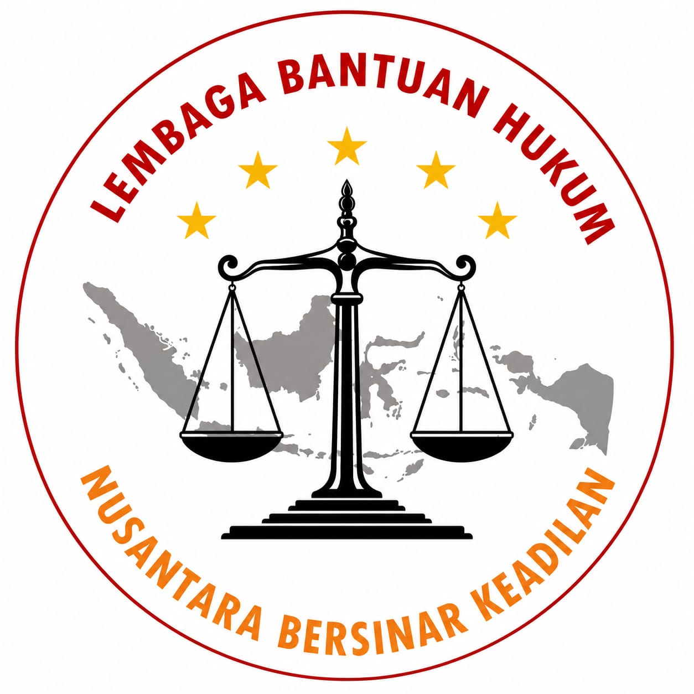
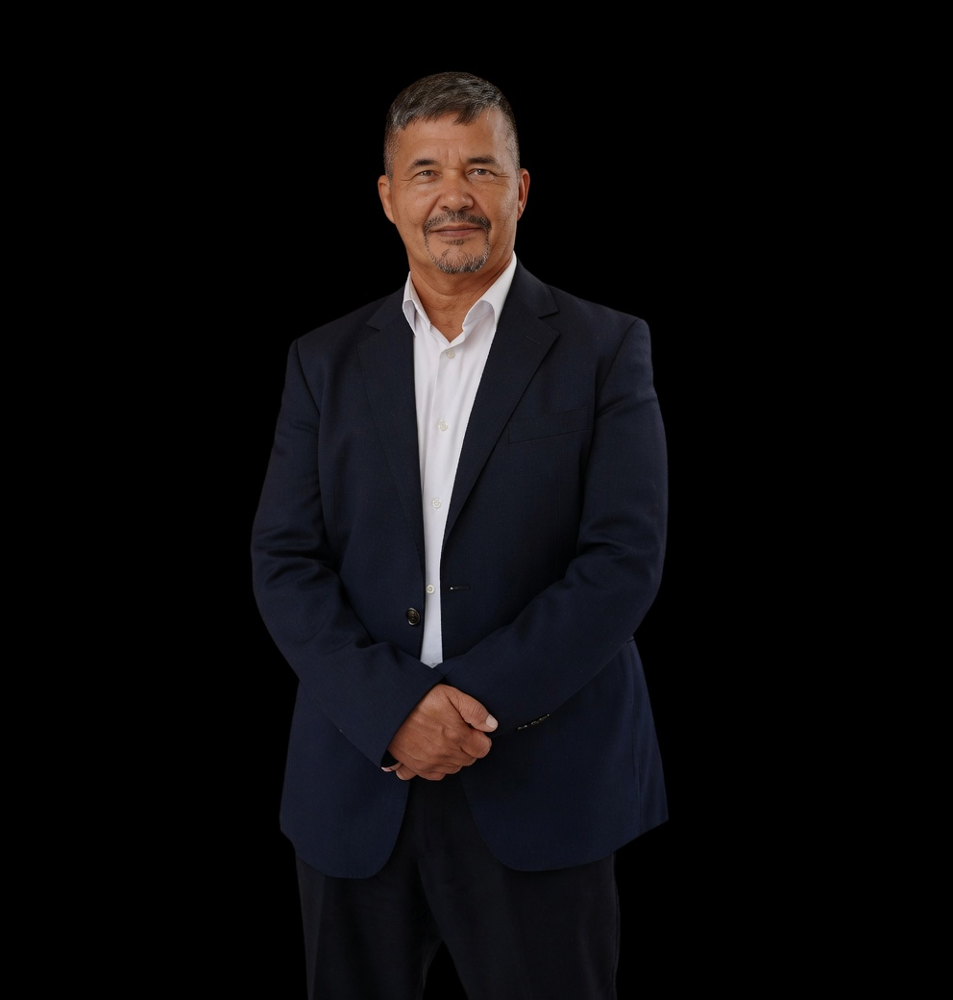
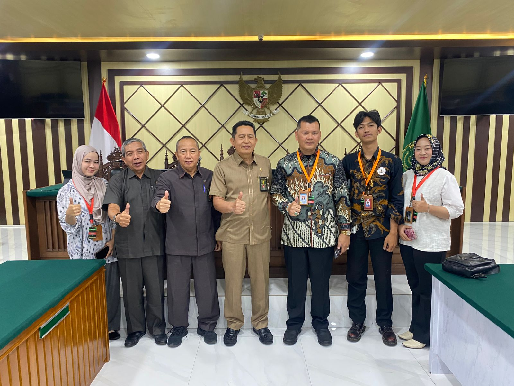
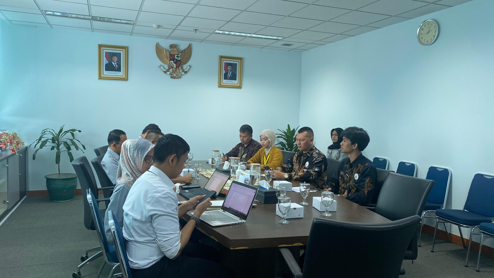
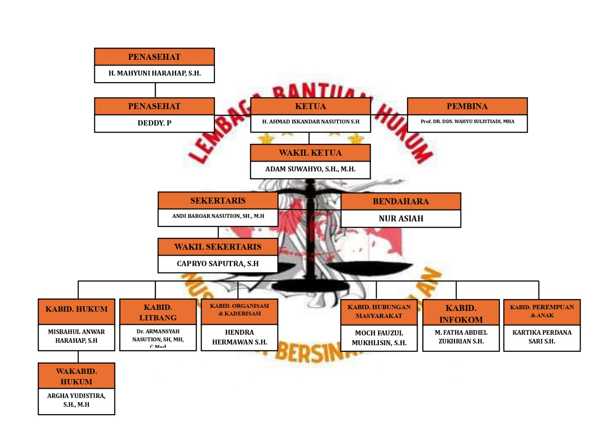

Tim Berkompeten
Didukung advokat, tenaga legal, dan mahasiswa hukum dengan komitmen tinggi.

LBH NBK Nusantara Bersinar KeadilanLembaga Bantuan Hukum
Mitra hukum yang responsif, berintegritas, dan berpihak pada akses keadilan bagi masyarakat yang membutuhkan.
Tentang LBH NBK
Lembaga Bantuan Hukum Nusantara Bersinar Keadilan merupakan lembaga yang mewadahi praktisi hukum yang terdiri atas advokat, tenaga legal, dan mahasiswa hukum.
LBH NBK berdiri sebagai bentuk kepedulian terhadap masih terbatasnya akses masyarakat terhadap bantuan hukum, khususnya bagi kelompok yang membutuhkan pendampingan hukum secara adil dan profesional.

Pesan Ketua Umum
LBH NBK hadir dengan semangat memberikan bantuan hukum, pendampingan, serta edukasi hukum kepada masyarakat, khususnya mereka yang kurang mampu dan membutuhkan perlindungan hukum secara adil.
Mengapa Kami
Didukung advokat, tenaga legal, dan mahasiswa hukum dengan komitmen tinggi.
Mendorong bantuan hukum yang adil, manusiawi, dan tanpa diskriminasi.
Konsultasi dan pendampingan disesuaikan dengan kebutuhan klien dan masyarakat.
Spesialisasi Jasa Hukum
Sekilas Kegiatan
LBH NBK menjalin komunikasi dan kerja sama dengan berbagai lembaga seperti Pengadilan Tinggi, Komisi Yudisial, Rutan Cipinang, Rutan Depok, Polres Metro Depok, dan mitra terkait lainnya.


Tim & Organisasi

Bagian dari tim LBH NBK dalam penguatan layanan dan pendampingan hukum.
Bagian dari tim yang mendukung kerja konsultasi dan layanan hukum masyarakat.
Company Values
Menjunjung kejujuran, tanggung jawab, dan etika profesi.
Bekerja kompeten, objektif, dan berorientasi pada kualitas layanan.
Memperjuangkan hak dan keadilan bagi seluruh lapisan masyarakat.
Hadir untuk membantu masyarakat yang membutuhkan akses bantuan hukum.
Menjaga objektivitas dan kepercayaan publik dalam setiap penanganan perkara.
Mengedepankan informasi dan komunikasi yang jelas dalam proses pelayanan hukum.
Mari Bekerja Sama
Hubungi LBH Nusantara Bersinar Keadilan untuk konsultasi awal, kerja sama, atau kebutuhan pendampingan hukum.